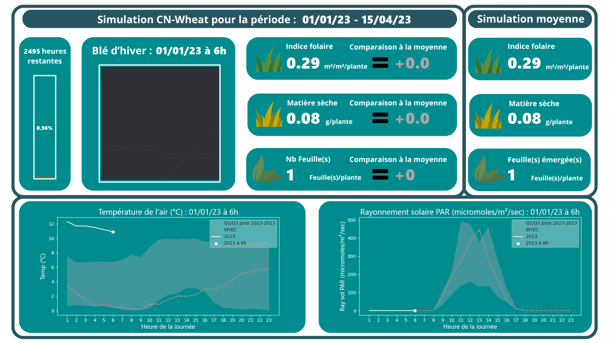

CDD à l’INRAE
Ce CDD s’est déroulé au sein de l’unité URPF3 du centre INRAE de Nouvelle-Aquitaine-Poitiers à Lusignan (France), et s’inscrivait dans la continuité de mon stage de BUT3. Ce dernier avait pour objectif d’analyser et comparer la croissance de plantes de blé d’hiver sous différentes conditions climatique spécifiques. Pour rendre cela possible, un outil de simulation de développement de plante se nommant CN-Wheat a été utilisé. Les données météorologiques en entrée provenaient de méthode statistique se nommant les années typiques météorologiques, qui j’avais pu développer durant mon stage de BUT2.
Pour ce contrat, il fallait développer une interface graphique dynamique permettant de visualiser la simulation d’une croissance de plante simulée en temps réel, avec des indicateurs permettant de comparer son développement selon différents scénarios climatiques.
Pour mettre en place cela, une chaîne de traitement en Python a été développée permettant de nettoyer et filtrer les données météorologiques afin de les mettre en entrée du modèle CN-Wheat. La plateforme Climatik a été utilisée afin d’envoyer des requêtes journalières pour récupérer la météo récente. Une fois que les données étaient prêtes, les simulations se lançaient pour chaque scénario climatique à modéliser. Les résultats étaient ensuite récupérés puis analysés pour calculer différents indicateurs de développement tel que le LAI (Leaf Area Index).
Une interface graphique a ensuite été mis en place sous la forme d’une image PNG se mettant à jour toutes les heures pour afficher les indicateurs de développement, des informations sur la météo, ainsi qu’une visualisation du modèle 3D de la plante.
Compétences acquises :
- Compréhension et utilisation d’un outil Python destiné à la modélisation
- Manipulation d’images PNG et SVG
- Mise en place d’une chaîne de traitement automatisé et modulaire en Python
- Gestion et optimisation d’une quantité importante de données
- Interprétation des demandes et des besoins d’un commanditaire
- Sélection d’indicateurs statistiques adaptés au contexte
Illustrations

Exemple d'affichage généré